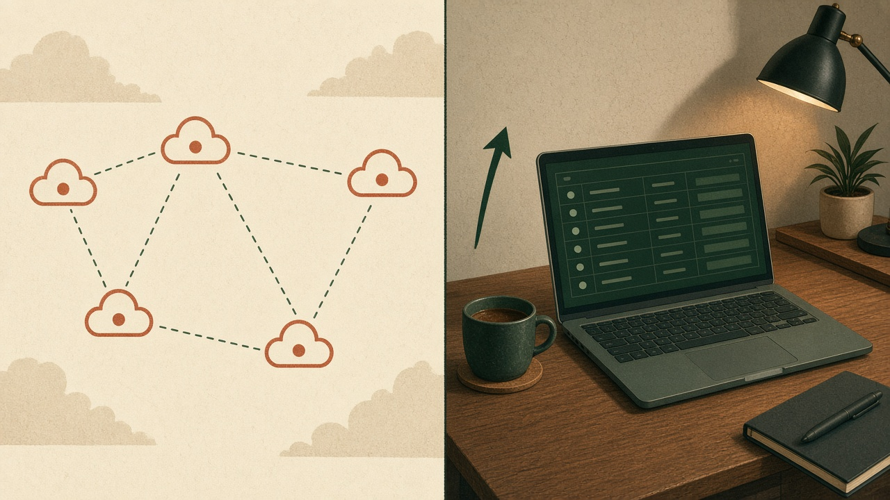
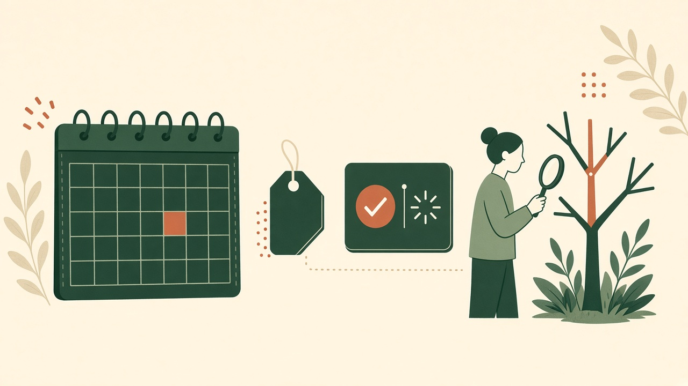
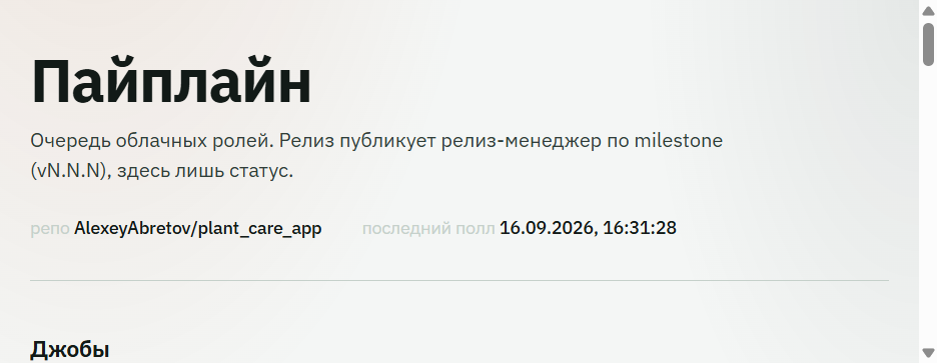

Оркестратор разработки
Агентный
пайплайн
GitHub Issues → Cursor Cloud → очередь ролей на машине разработчика.
GitHub Issues → Cursor Cloud → очередь ролей на машине разработчика.
Процесс в облаке. Человек держит merge, дату релиза и стоп-кран.
Ветки пайплайна — pipeline/N-…. Merge в main только после явного подтверждения.
Один git remote — GitHub. Локальная Gitea пайплайном не используется.
Issues, labels, PR, Actions, tags, Releases, milestone vN.N.N
Комментарии issue и PR. Полный транскрипт агента в UI не копируется.
Поллинг issues → выбор роли → Cursor SDK. Fastify, MongoDB jobs, schedule milestone.
Таблица очереди, статусы, ссылки на issue и Cursor agentId. Bind 127.0.0.1.
Аналитик → разработчик → тестировщик → релиз-менеджер. Клон продукта на VM, без merge в main.
Маркеры в тексте ответа: PIPELINE_LABELS, BUG_ISSUES, MVP_TASKS, RELEASE_TAG.
Оркестратор только исходящие HTTPS-запросы. Нет входящего webhook и Cloudflare Tunnel.

| Роль | Делает | Не делает |
|---|---|---|
| Аналитик | План в issue; для MVP — задачи после апрува | Код, merge |
| Разработчик | Ветка issue/<n>-…, pull request | Merge в main |
| Тестировщик | Issue-QA по PR или регресс main | Tag, Publish, E2E без локального прогона |
| Релиз-менеджер | Changelog и published GitHub Release по milestone | Draft, merge, релиз без зелёного регресса |
Analyst, developer, tester и RM стартуют в одном полле параллельно. Роли не ждут друг друга. Повтор той же пары (issue, role) блокирует MongoDB-замок.
needs-human режет все роли. После ошибки Cursor человек снимает метку и возвращает trigger-label — замок сбрасывается, агент стартует снова.
После qa-passed на feature/bug автоматика останавливается. Релиз-менеджер от этой issue не вызывается.
Глубина дерева = 1. fix-round ≤ 3. Четвёртый круг разработчика → needs-human.
Маркер PIPELINE_MVP_TASKS: 12+14,16
Нет коммитов с прошлого tag → milestone закрывается, Release не создаётся. Красный регресс, needs-human или открытые bug/feature/mvp → blocked: no release.

Процесс продукта. Оркестратор читает labels, запускает роль и переписывает их. Без нужного label тик issue не увидит.
Идемпотентность оркестратора: одно активное облачное задание на (issue, role). История не стирается, замок можно сбросить.
Проекция для человека. finished + needs-human → «уточнение». Ошибка Cursor → «ошибка».
После рестарта джобы running/queued помечаются error + cleared: облачный агент уже мёртв, запись журнала остаётся.
Оркестратор сам меняет labels и создаёт Release. Агенту нельзя доверять GitHub напрямую.

| Issue | Роль | Статус | Решение |
|---|---|---|---|
| #49 | tester | выполняется | — |
| developer | готово | in-qa | |
| analyst | готово | ready-for-dev | |
| #47 | tester | готово | qa-passed |
| #45 | tester | ошибка | dropped after restart |
Живой UI: ссылки на GitHub issue и Cursor agent. Релиз публикует RM по milestone, в таблице лишь статус.
При сомнении — needs-human, не «лучшая догадка».
Поллинг GitHub. Облачные роли по labels. Календарный Release. Продукт остаётся на машине разработчика.
Документы: CONSTITUTION.md · AGENT_PIPELINE.md · AGENT_PIPELINE_ARCHITECTURE.md